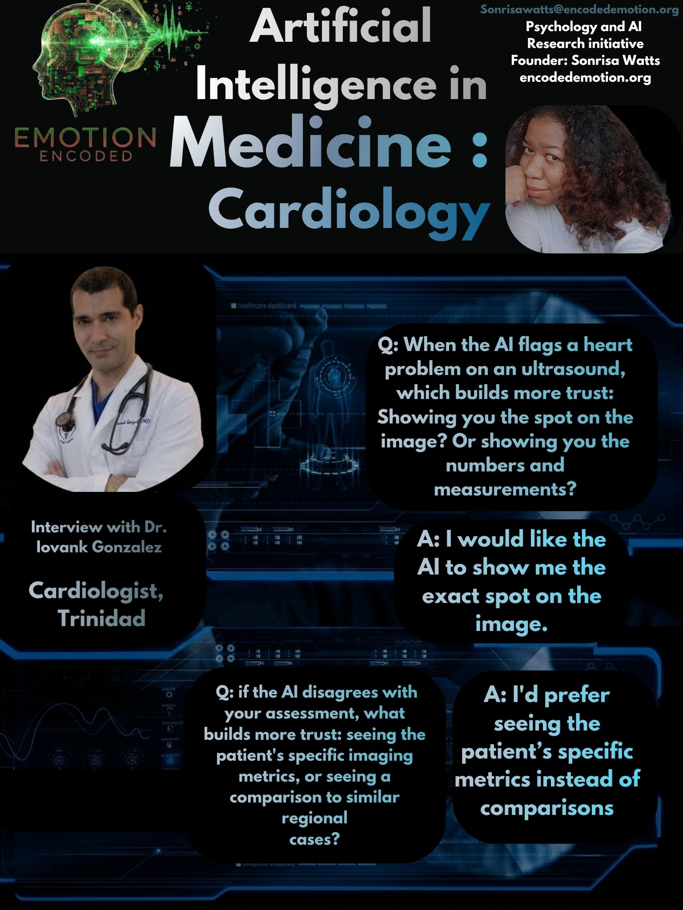

I spoke with Dr. Iovank Gonzalez, a Consultant Cardiologist in Trinidad and Tobago, to look at how doctors trust AI when reading heart data. His insights show that trust in cardiac AI comes down to seeing the actual visual evidence and patient-specific metrics, rather than regional data comparisons. He also warned that clear AI explanations can trap younger doctors into trusting the system too blindly.
When an AI flags a heart problem on an ultrasound, doctors need visual proof to trust it. Dr. Gonzalez notes that showing the exact spot on the image builds much more trust than just showing numbers and measurements. In cardiology, seeing the visual evidence allows for a quick check right at the bedside. A standalone number requires extra calculation, but a visual highlight lets the doctor instantly verify the AI's logic against what they see on the scan.
If the AI disagrees with a doctor's assessment, general data cannot solve the conflict. When asked what builds more trust during a disagreement, the patient's specific imaging metrics or a comparison to similar regional cases, Dr. Gonzalez choose the patient's specific metrics. In critical heart care, population trends do not matter as much as the unique mechanics of the patient in front of you. Trust is built by letting the doctor look at the exact data points the AI used to make its decision.
The interview also highlighted a major risk with Explainable AI (XAI). When an algorithm gives very clear, persuasive explanations, it can cause younger practitioners to lower their guard. Dr. Gonzalez agrees with this danger, stating plainly that "nobody should trust too much in the system." He warns that young doctors who are still learning should focus on thinking for themselves and building their own ideas instead of completely relying on AI answers. If the system makes things look too easy, trainees might stop developing their own clinical intuition.
Research Implications for Emotion Encoded
The interview with Dr. Iovank Gonzalez shows that cardiac AI needs to be a tool for quick verification, not something that makes final decisions. Cardiologists want to see spatial highlights and case-specific metrics they can manually double-check. Dr. Gonzalez's warning shows that clear AI explanations are a double-edged sword, helpful for experts to check the logic, but dangerous if they stop the next generation of Caribbean doctors from thinking independently.
Sonrisa Watts // Emotion Encoded // 2026